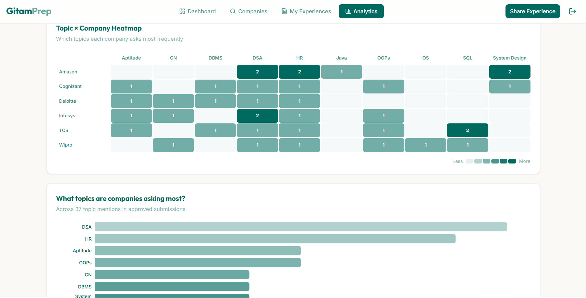
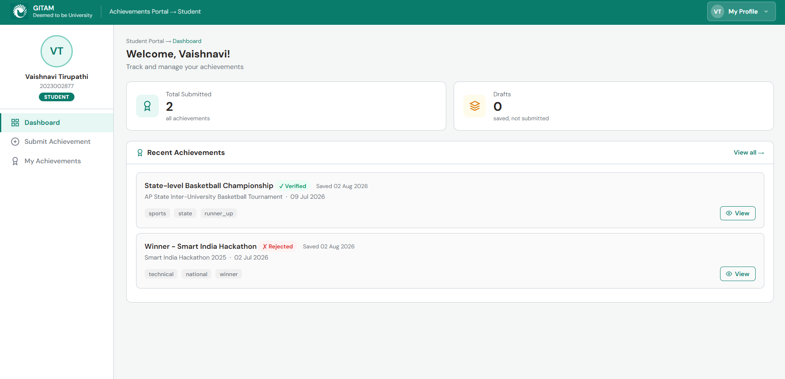
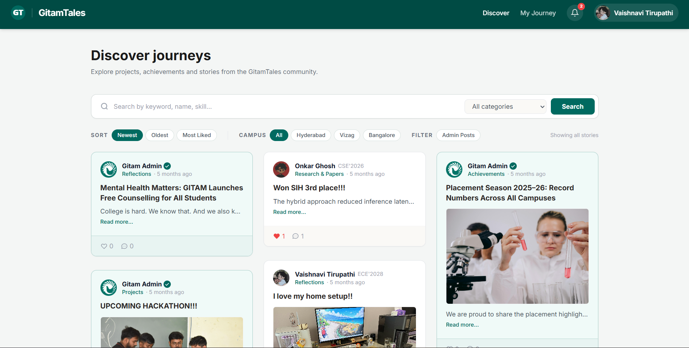

Builds production systems end-to-end — from schema design to Redis caching layers, LLM pipelines, and CI/CD deployments.
I'm a generalist software engineer focused on resilient backend architecture and Infrastructure-as-Code. I build end-to-end full-stack systems and accelerate workflows using AI coding assistants.
I first got hooked on software engineering while building full-stack applications, but what pulled me in deeper was backend architecture — the parts users never see but always feel: a query that returns in milliseconds instead of seconds, an auth flow that fails safely, a schema that scales without rewrites.
For me, correctness is non-negotiable. A silent failure in production — a cache that goes stale, a rate limiter that quietly stops working — is worse than any bug a user can see and report. I build for the full picture: systems that hold up under load, fail loudly when something's wrong, and do exactly what they're supposed to do, every time.
📍 Visakhapatnam, India · CGPA 8.05/10 · Expected grad: April 2027
End-to-end full-stack platforms and serverless cloud infrastructure.
Provisioned a serverless REST API entirely via Terraform, using on-demand billing to avoid manual resource management. Automated deployment with a GitHub Actions pipeline running terraform plan on pull requests and apply on merge to main.
Implemented least-privilege IAM at two layers: a Lambda execution role scoped to exact DynamoDB resource ARNs, and a custom-scoped deploy policy restricting the CI/CD user to only project-named resources. Validated the full CRUD flow end-to-end against the live API Gateway endpoint.

GITAM students preparing for placements had no structured way to access or analyze past interview experiences. Data was scattered in WhatsApp groups and informal notes — no trend analysis, no company-specific patterns, no way to know what topics actually come up at Amazon vs TCS.
A full-stack placement prep platform: students submit interview experiences, faculty approve them, and the analytics layer surfaces company-specific trends, topic heatmaps, difficulty distributions, and contributor leaderboards. The 12-table PostgreSQL schema handles submissions, rounds, tags, comments, upvotes, bookmarks, and search analytics. Secure auth with OTP-based password reset and JWT sessions.
Wrote 113 unit and integration tests (65 backend with Jest/Supertest, 48 frontend with Vitest/React Testing Library). This comprehensive test suite uncovered and fixed a critical production bug in the request validation middleware that would have caused API crashes on invalid input.
The heaviest analytics query (topic-frequency, joining multiple tables) took 728ms cold. I built a Redis-ready caching layer with automatic in-memory fallback — cache hits dropped to <1ms, a 99.9% reduction. Deployed to Render with a GitHub Actions CI pipeline on every push, rate-limited to handle production traffic reliably.

The university's certificate approval process was entirely paper-based. Students had to physically submit copies, which faculty manually verified and admins recorded. It was slow, error-prone, and provided no visibility into the approval status or historical data.
A digitized role-based access control (RBAC) portal. Students upload certificates (processed via Cloudinary), faculty review them in queues, and admins export approved records to PDF/Excel. I implemented secure OTP password resets with 5-attempt lockouts and built a custom analytics dashboard with Chart.js.
Achieved a 98/100 Lighthouse performance score with 0ms Total Blocking Time on the frontend. During production, I actively traced and resolved three major infrastructure failures solo (SMTP outage, persistent volume loss, and proxy rate-limit misconfigurations), quickly restoring service with zero data loss.

Students needed a centralized place to publish project write-ups and share experiences, but a public feed poses moderation risks. Manual review of every submission would create a massive bottleneck for the admin team, delaying publication and discouraging use.
A public feed platform where students can seamlessly publish their project stories. I integrated the Google Gemini API directly into the submission pipeline as a synchronous middleware. It analyzes the content, detects policy violations across multiple languages, and automatically flags inappropriate submissions before they ever hit the database.
Reduced manual moderation overhead to near-zero while maintaining feed safety. The core feed endpoint, despite the complex underlying database queries, sustains an average response time of ~84ms. The entire stack is continuously deployed to Render via GitHub Actions.
GITAM University
GITAM University, Visakhapatnam
I'm actively looking for SWE roles — full-time or internship. I'm especially interested in building robust systems, and I'm comfortable working across the entire stack.